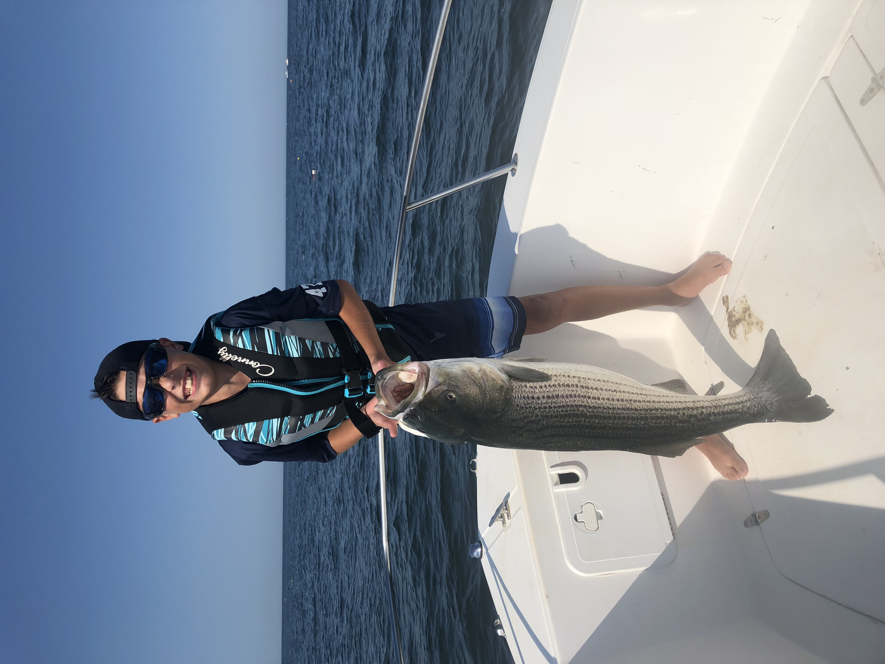

For as long as I can remember there has always been a spot for a fishing rod in my hands.
Since a very young age I have gone fishing, usually with my dad, in both fresh and salt water.
Persoanlly, I prefer salt water fishing more than fresh water, and I especially like fishing from a boat.
Theres something about being out there away from land that is calming to me.
This past summer, my dad and I began trying to catch football tuna, and often found ourselves a number of miles offshore, but still close enough to where we can see land.
One of my favorite feelings is when were heading out and hitting that point where there is no more cell service. No one to disturb us.
Having grown uop being on a boat fishing has spoiled me and now I know that I will definetly want to have my own boat in the future.
Fishing has always and will hopefully be apart of who I am. Even making a shorter trip on a day and staying closer inshore is just as much fun to me.
Often times if my dad and I are not heading offshore, we are fishing for stripers, a very common species along the northern east coast.
In recent years, new bait fish have been in the area, pogies, allowing for the stripers to grow much bigger.
Working at a marina, I constantly have been shown large fish by people who went out fishing that day and it always makes me jealous.
I much rather spend a day fishing than sitting at a marina working.
The one way I can get back at these peole is tell them my personal record when its bigger than the fish they're showing me.
A 46 inch striper.
I was twelve when I caught this fish and will never forget the adrealine rush I got while fighting this fish.

Me holding up my personal record Striper.
Fun Goals
One thing I have always wanted to do is buy an older vehicle and restore it. One car that comes to mind is the 1970's Ford pickup trucks or an 1980's GMC pickup.
Something about these trucks has always sparked my interest.
Also, I like hands on projects and restoration has always been something that has intrigued me.
Going along with the restoration goal of mine I have also always wanted to buy a cheap boat and fix it up to sell.
I believe this stems from me growing up on boats and liking to be able to step back and look at something I physically did.
Something about the idea of flipping boats for a profit seems like it would be a lot of fun to me.
Although I have some knowledge of engines it would be a struggle to fix a boat to a point where I would be comfortable selling it knowing it will work well.
A third goal I have always had is to start my own business. What this buisness will be or do is a complete unknown.
I just know I would love to be the owner of a company I started myself.
The ending of a video from youtuber ThatBoatGuy, someone who fed my yearing for
rebuilding a boat. This video shows the transformation of one of his projects.